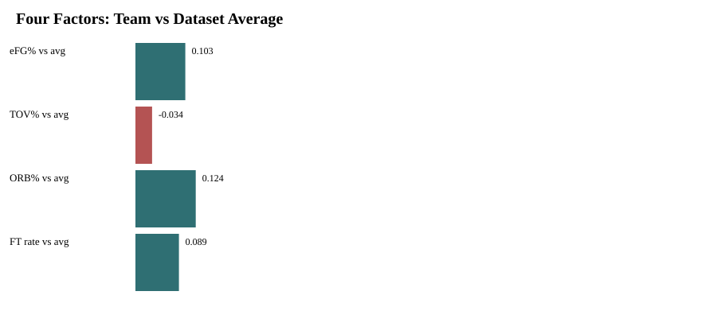
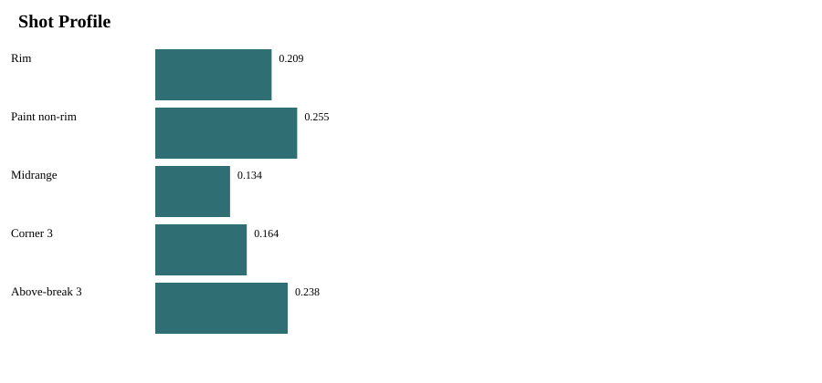
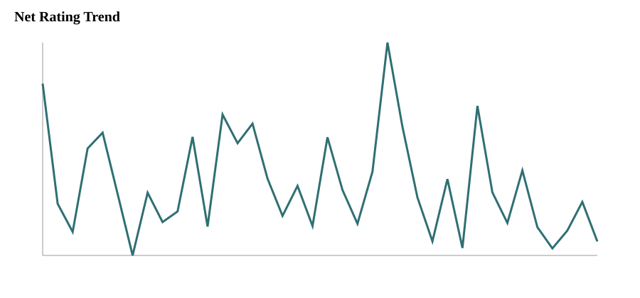

These are the final products a coach, analyst, professor, or admissions reader would open.
Basketball intelligence portfolio
Basketball Analytics & Scouting Portfolio
I analyze teams and players through possession-based metrics, roster context, shot profiles, lineup signals, and scouting-style interpretation.
The goal is not to describe stats. The goal is to explain how a team functions, where its advantages repeat, and where the film or roster context should be checked next.
0
published team report
0
report files
0
chart assets
0
NCAA pipeline
Featured Report
North Carolina
Team Report
North Carolina Identity Reset
A possession-based read of offensive structure, frontcourt pressure, context splits, and roster transition.
115.5 ORtg
+11.7 Net
54.3% eFG
SourceOriginal analysis
DataNCAA box score, play-by-play, shot locations, lineup estimates
FormatInteractive article + full report
What This Site Is
Three things, clearly separated.
The portfolio should not repeat itself. The work is organized as finished reports, technical data projects, and methodology/validation notes.
This shows that the analysis is built, not guessed.
This is where credibility comes from.
Data Projects
The systems behind the analysis.
Projects are the technical builds: scrapers, pipelines, validation layers, metrics, and dashboards. Reports are the finished basketball reads and live in the next section.
Featured Data Project
NCAA Men's Basketball Analytics Pipeline
A full data pipeline that turns public NCAA box score, play-by-play, shot-location, and lineup data into validated team/player/report tables.
Technical question
Can the raw data become trustworthy enough to support basketball claims?
5data projects
5report types
3validation layers
1refresh flow


NCAA Data Collection Pipeline
Scrapes and organizes NCAA team, player, game, box score, and play-by-play data into analysis-ready tables.
- Build
- CSV outputs, team/player layers, reproducible scripts
- Used for
- Every downstream team and player report
Advanced Team & Player Metrics
Calculates pace, ratings, Four Factors, usage estimates, role indicators, and rolling trends.
- Build
- team_season, player_season, team_game, scouting layers
- Used for
- Team identity and player role interpretation
Lineup Reconstruction Layer
Turns substitution and PBP sequences into lineup stints, five-man groups, and on/off context.
- Build
- lineup_stints, five_man_lineups, player_on_off
- Used for
- Lineup reports and player context notes
Shot Location & Shot Clock Layer
Processes field-goal locations, zone labels, assisted flags, and real shot-clock attempt splits.
- Build
- team/player shot profiles, shot-clock FGA tables
- Used for
- Shot diet, spacing, and player scoring profiles
Automated Team Focus Packages
Generates one folder per team with focused tables, charts, validation notes, and report markdown.
- Build
- team_focus folders and report-ready assets
- Used for
- Team reports and scouting summaries
Team Analysis Showcase
Team identity snapshot.
One team card should quickly communicate production, identity, strengths, concerns, and staff takeaway.
NCAA Team
North Carolina
2025-26 profile / 2026-27 reset
High-ceiling offense, context-dependent repeatability
Pace69.0
ORtg115.5
DRtg103.8
Net+11.7
eFG54.3%
ORB31.2%
Main strengthRim pressure + frontcourt structure
Main concernHalf-court stability when easy rhythm is removed
Staff takeawayThe question is whether advantages become repeatable mechanisms.

Reports Library
A library for articles, PDFs, charts, and methodology.
Short public reads can sit next to full reports, source notes, validation summaries, and code links.
North Carolina's 2026-27 Reset
UNC's profile was strong but context-dependent; the reset asks whether advantages can repeat.
- Data: box scores, PBP, shot-location, lineup estimates
- Skills: Four Factors, context splits, roster transition
NCAA Analytics Pipeline
Data ingestion, validation, possession logic, shot profile processing, and report exports.
- Data: NCAA.com, CBB shot feed, generated validation tables
- Skills: Python, pandas, pipeline design, checks
Methodology & Validation
Credibility comes from showing the assumptions.
The methodology page should make clear what is exact, what is reconstructed, what is a proxy, and what should be checked on film.
Possession-Based Efficiency
Pace-neutral ORtg, DRtg, net rating, and Four Factors form the team identity baseline.
Shot Zone Classification
Rim, paint non-rim, midrange, corner three, and above-break three profiles explain shot diet.
Lineup Estimates
Lineup stints are reconstructed from substitutions and must be read with sample-size flags.
Opponent Adjustment
Context splits separate raw production from opponent strength, venue, and recent-form effects.
Validation
Validation before every report
Before a report becomes a basketball claim, the pipeline checks scoring totals, player totals, PBP scoring, and shot-chart coverage where available.
- Box scoreteam totals reconcile to game results
- Player totalsplayer production reconciles to team totals
- PBP scoringplay-by-play points are checked before possession claims
- Shot chartFGA, FGM, 3PA, and 3PM coverage is verified where shot data exists
Technical Stack
Technical skills connected to basketball use.
Every tool should lead to a cleaner basketball question, chart, table, or scouting read.
Python
Metric calculation, pipeline scripts, validation checks, automated reports.
pandas
Grouped metrics, rolling trends, joins across box score, PBP, shots, and lineups.
SQL-ready Modeling
Team, player, game, possession, lineup, and shot tables designed for analysis.
Visualization
Four Factors, shot profiles, player comparisons, lineup charts, trend graphics.
Reporting
Short articles, full scouting reports, methodology notes, PDF-ready outputs.
Basketball Framework
Role context, repeatability, roster construction, opponent tendencies.
About
Student analyst building serious basketball work.
My name is Kyriakos Theophanous. I am a Computer Science student building a basketball analytics and scouting portfolio focused on college basketball, team identity, player roles, and possession-based analysis.
I am especially interested in the connection between data and basketball decisions: how a team creates advantages, how player roles affect lineup function, how shot profiles reveal identity, and how roster construction changes the way a team can play.